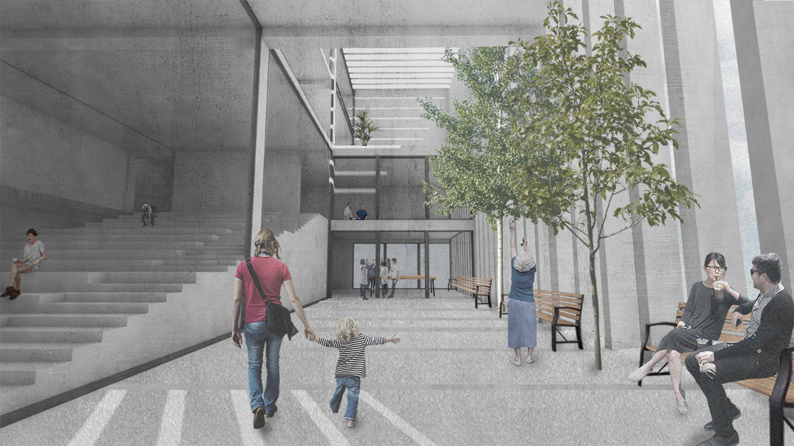
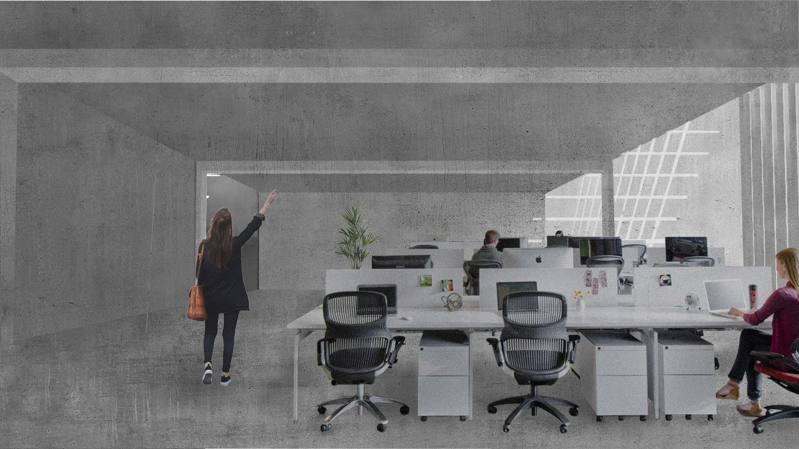
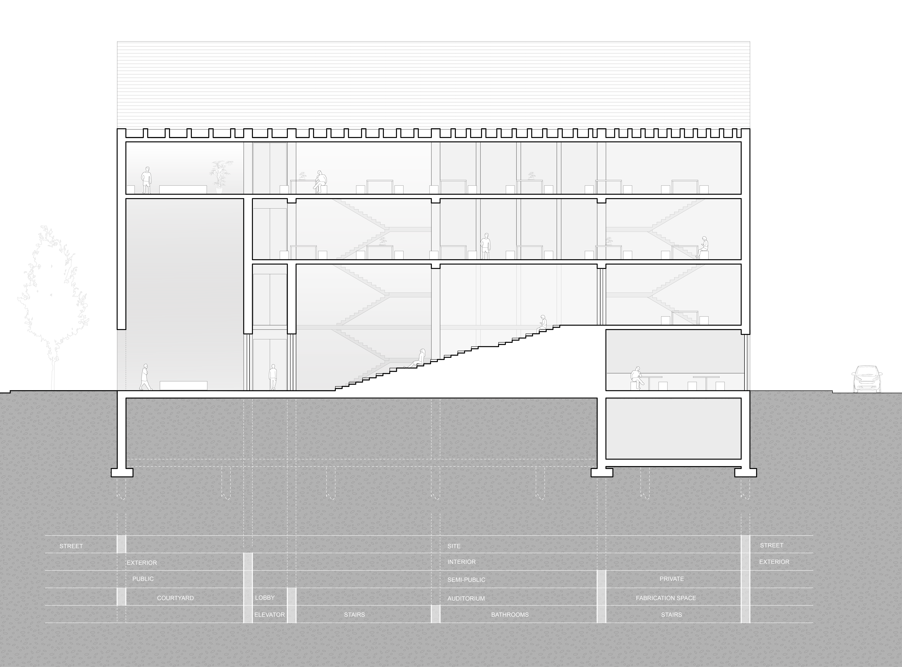

WHAT: URBAN WORKSPACE LOCATION: EAST LIBERTY, PITTSBURGH, PA
WHEN: MARCH - MAY 2018 PROFESSORS: JEREMY FICCA, LIZA CRUZE
How to design a building that engages its surroundings and the public while keeping a degree of privacy? An office is a place where you work for a collective whole, something greater than the individual. How can that be reflected in the architecture?

01 VIEW OF COURTYARD

02 IN OFFICE
The site is located in East Liberty, a busy part of Pittsburgh full of commercial spaces. I took into consideration its urban presence and designed a space to preserve privacy for the workers while being open to the public. The walls act as both structure for the building, but also as filters of circulation through the building. (See 04 Section.)

03 EXPLODED AXONOMETRIC
Holes are punctured through the walls to create floor plates and create larger rooms in an organic way that fit the program of open office spaces, small work spaces and auditorium space. I added fins that look like the walls themselves, but are not structural for the building to read as a whole and look clean from the outside. The fins get denser and increase in quantity as you move further into the building, as it becomes a more private space.

04 SECTION
Each wall acts as a filter or threshold- separating what is street vs. site, exterior vs. interior space, public vs. private space, and different programmatic spaces.